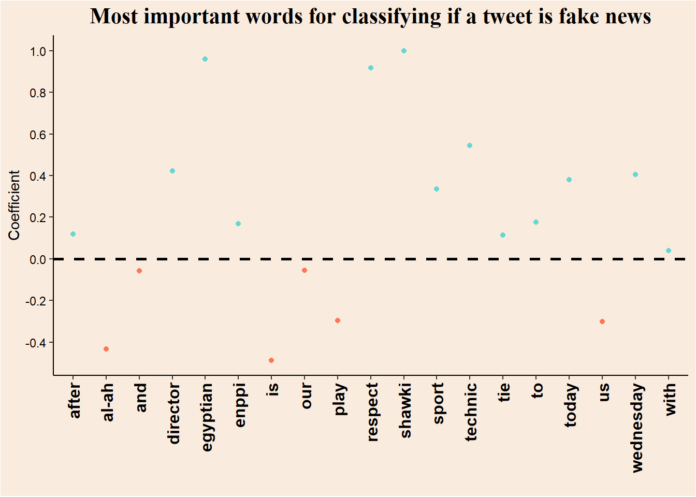

library(tidyverse) # data loading, data preparation and stringr
library(quanteda) # text preprocessing and DFM creation
library(quanteda.textmodels) # machine learning models
library(glue) # that's a secretAs part of my data-science courses this fall semester, I have started also to get into Natural Language Processing (NLP, but of the good kind). This is the first time I have ever tried it, so let’s see how it went.
Brief overview of the post:
1. Basic preprocessing and creation of Data Feature Matrix (DFM), using packages stringr and quanteda.
2. Classification with Naive-Bayes method.
3. Classification with Logistic regression, and feature importance plot.
Background
This dataset is the “Fake News football” dataset from uploaded to Kaggle by Shawky El-Gendy. It contains ~42,000 tweets about the Egyptian football league, some of them are fake new, and some are true.
The work in this notebook is highly influenced by (Welbers, Van Atteveldt, and Benoit 2017).
Setup
Loading data
real <- read_csv("real.csv", show_col_types = F)
fake <- read_csv("fake.csv", show_col_types = F)Adding labels
real$label <- "real"
fake$label <- "fake"Combining data frames
tweets <- rbind(real, fake) |>
drop_na() |> # dropping NA rows
mutate(tweet = str_trim(tweet) |> str_squish()) # removing white-spaces in the start and beginning of tweet, and between wordsText preprocessing
Creating a corpus object, which is basically a named character vector that also holds other variables such as the tweet’s label. These are called docvars.
corp <- corpus(tweets, text_field = "tweet")
head(corp)Corpus consisting of 6 documents and 1 docvar.
text1 :
"sun downs technical director: al-ahly respected us and playe..."
text2 :
"shawky gharib after the tie with enppi: our goal is to retur..."
text3 :
"egyptian sports news today, wednesday 1/25/2023, which is ma..."
text4 :
"the main referees committee of the egyptian football associa..."
text5 :
"haji bari, the striker of the future team, is undergoing a f..."
text6 :
"zamalek is preparing for a strong match against the arab con..."Creating DFMs & cleaning text
Creating a count-based DFM (frequency of each word in each document). Before creating the DFM I employ 3 steps of normalization:
1. Removing special characters and expressions (punctuation, urls…).
2. Converting words to their stem-form (the word example converts to exampl). This step should decrease the number of unique tokens, so that our DFM would be less sparse.
3. Converting every character to lower-case letters.
data_feature_mat <- corp |>
tokens(remove_punct = T, remove_numbers = T, remove_url = T, remove_separators = T, remove_symbols = T) |>
tokens_wordstem() |>
dfm(tolower = T)
head(data_feature_mat)Document-feature matrix of: 6 documents, 18,869 features (99.89% sparse) and 1 docvar.
features
docs sun down technic director al-ah respect us and play to
text1 1 1 1 1 1 1 1 1 1 1
text2 0 0 0 0 0 0 0 0 0 2
text3 0 0 1 1 0 0 0 0 0 0
text4 0 0 0 0 0 0 0 1 0 0
text5 0 0 0 0 0 0 0 0 0 1
text6 0 0 0 0 0 0 0 0 0 0
[ reached max_nfeat ... 18,859 more features ]Machine Learning
Base-rate
In classification tasks, it is important to check the initial base-rate of the different classes. Failing to notice a skewed sample will result in false interpretations of performance metrics.
Imagine that a certain medical condition affects 1% of the population. A test that systematically gives negative results will have 99% accuracy!
We will calculate the base-rate in the following way:
\[
\frac{N_{real}}{N_{real}+N_{fake}}\
\]
table(docvars(data_feature_mat, 'label'))['real'] real
21869 table(docvars(data_feature_mat, 'label'))['fake'] fake
19991 The base rate is \(0.522\).
Train-test split
Usually it is advised that the Train-test split would occur before the creation of the DFM. That is because some methods of calculation are proportional and depends on other documents. Because we are employing a count-based DFM, the values in each cell of the matrix are independent of other documents. Therefore it is not necessary to split before creating the DFM’s.
set.seed(14)
train_dfm <- dfm_sample(data_feature_mat, size = 0.8 * nrow(data_feature_mat)) # large sample, we can use 80-20 train-test split
test_dfm <- data_feature_mat[setdiff(docnames(data_feature_mat), docnames(train_dfm)),]Naive-Bayes classifier
A Naive-Bayes classifier predicts the class (in this case of a document) in the following way:
The likelihood of each token to appear in documents of each class is calculated from the training data. For example, if the word manager appeared in \(11\)% of the documents in the first class, and in \(2\)% of the documents in the second class, the likelihood of it in each class is:
\[ \displaylines{p(manager\ |\ class\ 1)=0.11\\p(manager\ |\ class\ 2)=0.02} \]The prior probability of each document to be classified to each class is also learned from the training data, and it is the base-rate frequencies of the two classes.
For each document in the test set, the likelihood of it given it is from each of the classes is calculated by multiplying the likelihoods of the tokens appearing in it. So if a document is for example the sentence I like turtles, then the likelihood of it to belong class 1 is:
\[ \displaylines{p(I\ |\ class\ 1)\cdotp(like\ |\ class\ 1)\cdotp(turtles\ |\ class\ 1)} \]
More formally, if a document belong to a certain class \(k\), then it’s likelihood of being comprised of a set of tokens \(t\) is:
\[ \prod_{i=1}^{n}p(t_i\ |\ class\ k) \]According to Bayes theorem, the probability of the document to belong to class \(k\) - the posterior probability - is proportional to the product of the likelihood of it’s tokens given this class and the prior probability of any document to belong to this class:
\[ p(class\ k\ |\ t) \propto p(t\ |\ class\ k)\cdotp(class\ k) \]Because the Naive-Bayes classifier is comparing between classes, the standardizing term is not needed. The class that has the largest product of prior and likelihood is the class the document will be classified to.
Fitting the model
nb_model <- textmodel_nb(train_dfm, y = docvars(train_dfm, "label"))Test performance
pred_nb <- predict(nb_model, newdata = test_dfm)
(conmat_nb <- table(pred_nb, docvars(test_dfm, "label")))
pred_nb fake real
fake 3893 380
real 143 3956Seems nice, let’s look at some metrics.
Confusion matrix
caret::confusionMatrix(conmat_nb, mode = "everything", positive = "real")Confusion Matrix and Statistics
pred_nb fake real
fake 3893 380
real 143 3956
Accuracy : 0.9375
95% CI : (0.9321, 0.9426)
No Information Rate : 0.5179
P-Value [Acc > NIR] : < 2.2e-16
Kappa : 0.8752
Mcnemar's Test P-Value : < 2.2e-16
Sensitivity : 0.9124
Specificity : 0.9646
Pos Pred Value : 0.9651
Neg Pred Value : 0.9111
Precision : 0.9651
Recall : 0.9124
F1 : 0.9380
Prevalence : 0.5179
Detection Rate : 0.4725
Detection Prevalence : 0.4896
Balanced Accuracy : 0.9385
'Positive' Class : real
Nice results!
Logistic regression
The nice thing about the textmodel_lr method from the quanteda.textmodels package is that it does the Cross-Validation for us!
lr_model <- textmodel_lr(x = train_dfm, y = docvars(train_dfm, "label"))Test performance
pred_lr <- predict(lr_model, newdata = test_dfm)
(conmat_lr <- table(pred_lr, docvars(test_dfm, "label")))
pred_lr fake real
fake 3795 188
real 241 4148Also seems nice.
Confusion matrix
caret::confusionMatrix(conmat_lr, mode = "everything", positive = "real")Confusion Matrix and Statistics
pred_lr fake real
fake 3795 188
real 241 4148
Accuracy : 0.9488
95% CI : (0.9438, 0.9534)
No Information Rate : 0.5179
P-Value [Acc > NIR] : < 2e-16
Kappa : 0.8973
Mcnemar's Test P-Value : 0.01205
Sensitivity : 0.9566
Specificity : 0.9403
Pos Pred Value : 0.9451
Neg Pred Value : 0.9528
Precision : 0.9451
Recall : 0.9566
F1 : 0.9508
Prevalence : 0.5179
Detection Rate : 0.4955
Detection Prevalence : 0.5242
Balanced Accuracy : 0.9485
'Positive' Class : real
Slight improvement…
Plot important words for classification
Code
lr_summary <- summary(lr_model) # summarizing the model
coefs <- data.frame(lr_summary$estimated.feature.scores) # extracting coefficients
col_vec <- c("#fc7753", "#e3e3e3", "#66d7d1", "black")
coefs |>
# preparing df for plot
rownames_to_column(var = "Token") |>
rename(Coefficient = real) |>
filter(Coefficient != 0 & Token != "(Intercept)") |>
mutate(bigger_then_0 = Coefficient > 0) |>
# ggplotting
ggplot(aes(x = Token, y = Coefficient, color = bigger_then_0)) +
geom_point() +
scale_color_manual(values = c(col_vec[1], col_vec[3])) +
scale_y_continuous(n.breaks = 10) +
labs(title = "Most important words for classifying if a tweet is fake news",
x = "") +
theme_classic() +
geom_hline(yintercept = 0, color = "black", linetype = 2, linewidth = 1, show.legend = F) +
theme(axis.line = element_line(color = col_vec[4]),
axis.title = element_text(color = col_vec[4]),
axis.text = element_text(color = col_vec[4]),
axis.text.x = element_text(angle = 90, vjust = 0.5, hjust = 1, size = 12, face = "bold"),
legend.position = "none",
plot.title = element_text(size = 16, color = col_vec[4], hjust = .5, family = "serif", face = "bold"),
plot.background = element_rect(fill = "#F9EBDE"),
panel.background = element_rect(fill = "#F9EBDE"))
Conclusion
I think that for a first attempt at implementing NLP, the current notebook came out nice. I have learned a lot not only about NLP, but also on Naive-Bayes classifiers which is nice.
References
Welbers, Kasper, Wouter Van Atteveldt, and Kenneth Benoit. 2017. “Text Analysis in r.” Communication Methods and Measures 11 (4): 245–65. https://doi.org/10.1080/19312458.2017.1387238.